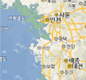
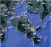

수심 및 지형변화 양상 예측 기술
분석설정
초기화
원하는 날짜와 분석 데이터를 조정하여 분석할 수 있습니다.
수심 해상도
선택
설정데이터1
설정기간
수심 해상도 - 100m
2022-05-24
수심 해상도 - 100m
2022-05-23
수심 해상도 - 50m
2022-05-22
수심 해상도 - 10m
2022-05-21
수심 해상도 - 50m
2022-05-20
기준날짜
×
수심 해상도
10m
50m
100m
분석하기
전체레이어
검색결과
초기화
즐겨찾기
(2)
암초
영해기점무인도서
해상
2
암초
분석 결과 레이어
최적 경로 레이어
최적 경로 레이어
최적 경로 레이어
최적 경로 레이어
최적 경로 레이어
최적 경로 레이어
최적 경로 레이어
최적 경로 레이어
최적 경로 레이어
최적 경로 레이어
최적 경로 레이어
분석현황
5
AI 분석 모델 활용 바로가기
AI 분석 모델 현황
수심 및 지형변화 양상 예측 기술
해안선 및 해안 구조물 탐지 기술
AI기반 해양사고 예측
경비/순찰 경로분석 기술
해양사고 대응 및 지원 기술
레이더 신호 분석기술
국제표준 기반 해군작전 지원 해양정보 서비스 기술
수중 음향 분석 및 예측 기술
1 : 25,000
배경지도
배경지도 선택
배경색
배경지도
투명도
해안선
약최고고조면

기본수준면
영문주기
전자해도

영상맵
표출레이어
표출레이어
암초
영해기점무인도서
예측 조위
선박사고
조류
와류
해양지명
해수면
배경지도 - 기본맵
거리재기
거리재기
새로고침
범례
범례
범례
가이드
내보내기
배경지도
새로고침
거리재기
면적재기
가이드
내보내기